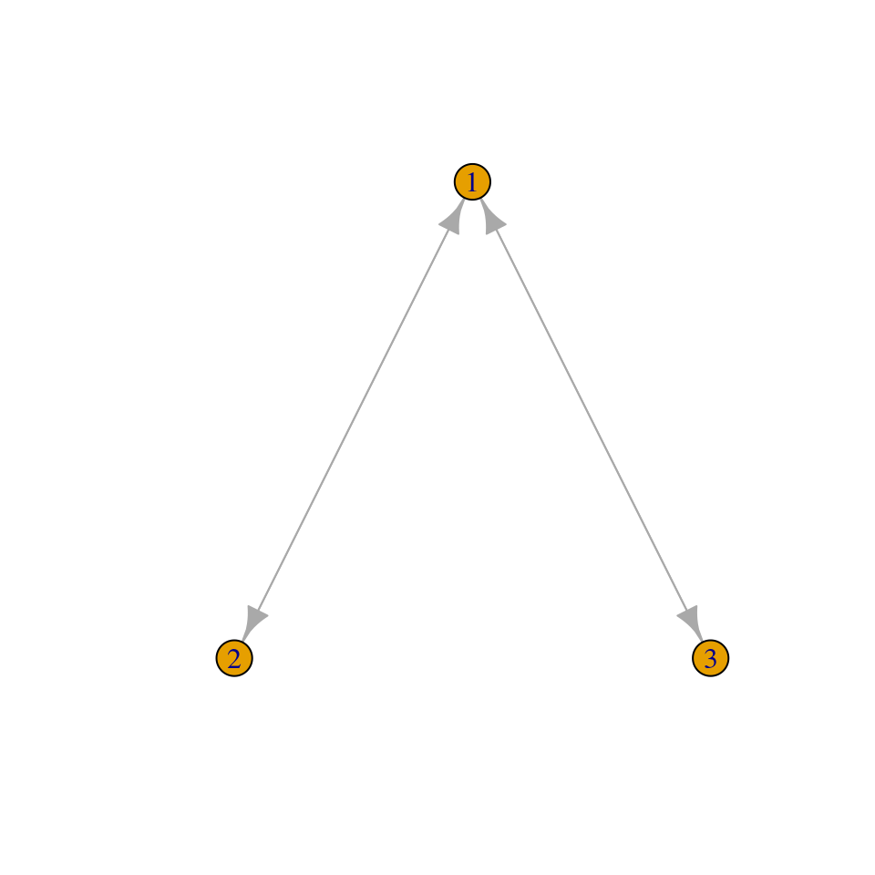
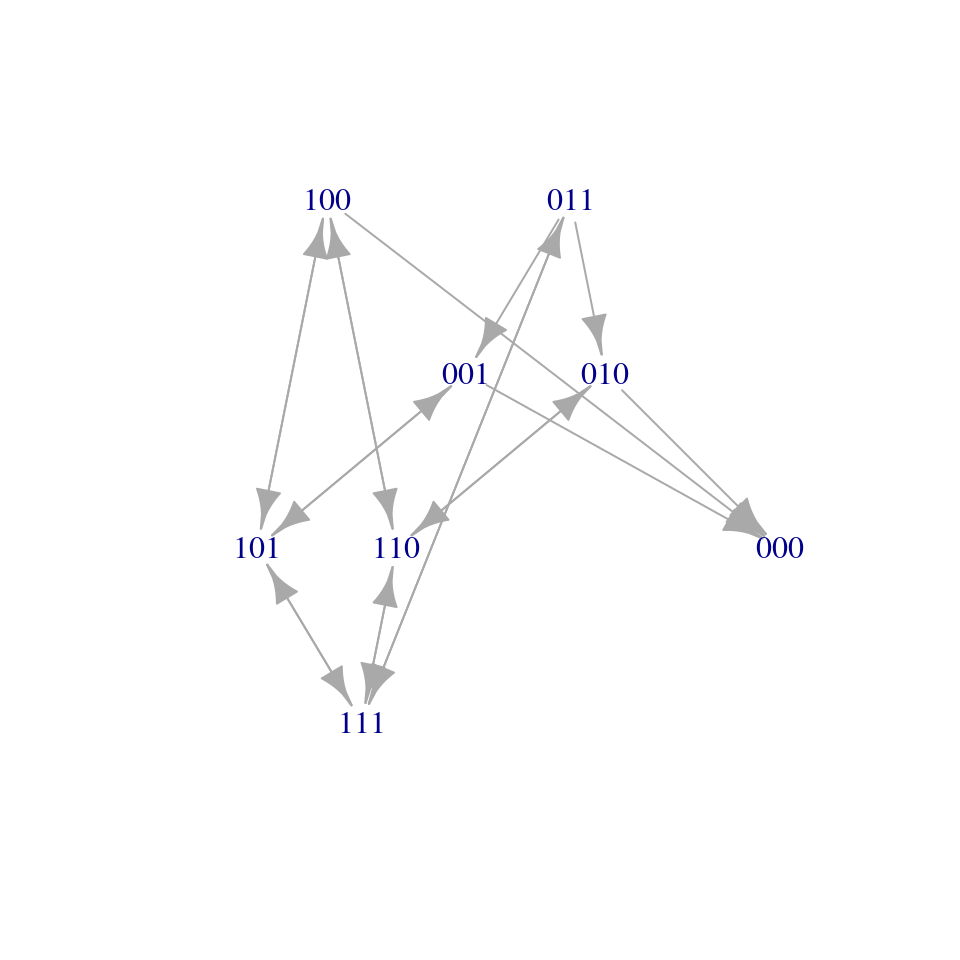

Lecture 8 Metapopulation dynamics on networks
Lesson plan:
- We analyze Levins’ metapopulation model, which we’ve encountered before.
- We introduce the idea of a network of dispersal, and see how metapopulation persistence depends on network structure.
- We draw a parallel with Susceptible-Infected-Susceptible models, in which individuals play the role of habitable patches and parasites disperse on a network of contacts.
8.1 Metapopulations
In 1969, Richard Levins—then a professor at U. Chicago—proposed a simple model for a “metapopulation”, i.e., a “population of populations in which local extinctions are balanced by remigration from other populations” (Levins (1969)).
History: Richard Levins (1930-2016)
Born in Brooklyn, New York, he studied agriculture and mathematics at Cornell. Early on, influenced by geneticist and polymath Haldane, he became a Marxist activist. Upon graduation, having been blacklisted as a communist (and with the Korean War raging), he moved to Puerto Rico with his wife, and set up a farm. In his spare time, he conducted experiments on fruit flies, organized anti-colonialist rallies and anti-war protests, and taught at the University of Puerto Rico. In 1964, he was invited to Cuba to help organize the biology department of the University of Havana. He received his doctorate from Columbia University in 1965. In 1967 he moved to the University of Chicago, where he joined Richard Lewontin—whith whom he established a lifelong collaboration. They both moved to Harvard in the late 1970s.
It is impossible to summarize his numerous contributions to ecology, mathematics, political science, and the philosophy of science. He has inspired countless ecologists, and his approach and style are still visible in many of the research programs being carried out today. Of particular interest for this class, his theory of evolution in a changing environment (Levins (1968)), the development of the idea of limiting similarity (MacArthur and Levins (1967)), his work on metapopulation dynamics (Levins (1969)), and the development of Loop Analysis (i.e., a qualitative theory for dynamical systems, Puccia and Levins (2013)).
Key paper: Levins (1966)
A must read for anyone interested in modeling (in biology and elsewhere). Just two quotes that resonate with the approach taken in these lectures:
- there are too many parameters to measure; some are still only vaguely defined; many would require a lifetime each for their measurement.
- The equations are insoluble analytically and exceed the capacity of even good computers,
- Even if soluble, the result expressed in the form of quotients of sums of products of parameters would have no meaning for us.
\(\ldots\)
Therefore, we attempt to treat the same problem with several alternative models each with different simplifications but with a common biological assumption. Then, if these models, despite their different assumptions, lead to similar results we have what we can call a robust theorem which is relatively free of the details of the model. Hence our truth is the intersection of independent lies.
The model is very simple. Suppose that there are very many patches of suitable habitat, and that we track the proportion of patches occupied by a certain species, \(x(t)\). Two processes affect the proportion of occupied patches: extinction, turning an occupied patch into a vacant patch, and colonization, turning a vacant patch into an occupied patch. For the simplest case, suppose that occupied patches can send “propagules” to empty patches at a fixed rate \(\gamma\), and that the rate at which local populations go extinct is the same for all patches, \(\delta\).
Call \(y(t) = 1 - x(t)\) the proportion of vacant patches. Then, the dynamics for the occupied patches are described by the equation:
\[ \dfrac{d x(t)}{dt} = - \delta x(t) + \gamma x(t) y(t) \]
in which we assume mass-action (like in GLV). Similarly, the equation for the proportion of vacant patches is:
\[ \dfrac{d y(t)}{dt} = \delta x(t) - \gamma y(t) x(t) \]
Note that the two equations sum to zero (i.e., we’re in a zero-sum setting), as \(x(t) + y(t) = 1\). Then, we can turn the model into a single equation, by substituting \(y(t) = 1 - x(t)\) in the first equation:
\[ \dfrac{d x(t)}{dt} = - \delta x(t) + \gamma x(t) (1-x(t)) = x(t)(\gamma - \delta - \gamma x(t)) \]
which is the usual equation for the logistic growth. As such, the equilibrium \(x^\star = (\gamma - \delta) / \gamma = 1 - \delta/\gamma\) is globally stable.
Calling \(S(t) = y(t)\) and \(I(t) = x(t)\) we obtain an SIS model in which a pathogen infect (“occupies”) individuals (“patches”). The equilibrium \(I^\star = (\gamma - \delta)/\gamma\) is reached whenever \(\gamma > \delta\) (i.e., \(\gamma/\delta = \mathcal R_0 > 1\)). We carry this parallel through the lecture.
8.2 Hanski Ovaskainen 2000
In Levins’ model, all patches are connected with all other patches, such that the rate of colonization does not depend on the identity of the patch serving as the source of propagules.
History: Ilkka A. Hanski (1953-2016)
 Photo by Otso Ovaskainen.
Photo by Otso Ovaskainen.
Born in Lempäälä, Finland, he studied at the University of Helsinki, and received his doctorate from the University of Oxford in 1979. From 1981 to his premature death in 2016, he worked at various Finnish institutions, lastly at the Academy of Finland.
His work on metapopulation theory is extremely well-known, thanks also to the amazing work on the Glanville fritillary butterfly Melitaea cinxia. This butterfly inhabits the dry meadows in Åland Islands archipelago—with about 4000 meadows, sampled yearly by an army of students since 1991, the fragmented landscape is an ideal testing ground for metapopulation theory.
Hanski won numerous awards, and served as a strong advocate for ecological conservation.
Hanski and Ovaskainen (2000) (mathematical details in Ovaskainen and Hanski (2001)) consider a model in which patches are spread geographically, and colonization from patch \(i\) to patch \(j\) depends on the distance (actually, an “effective distance”) between patches. In particular, they start from Levins’ model, written for a focal patch. We take \(x_i\) to be the probability that patch \(i\) is occupied at time \(t\) (and therefore \(1 \geq x_i \geq 0\)) as:
\[ \dfrac{d x_i}{dt} = \text{[Colonization rate i]}(1 - x_i) - \text{[Extinction rate i]} x_i \]
They also consider the patches \(a_1, \ldots, a_n\) to have different “values” (i.e., support populations of different sizes). In this context, it makes sense to assume that the extinction rate in patch \(i\) is \(\delta_i = \delta/a_i\). Similarly, the probability of colonization should decrease with distance, and be directly proportional to patch values; for example, one could choose \(\gamma_{ij} = \gamma e^{-\alpha D_{ij}} a_j\), where \(D\) is a matrix of Euclidean distances between patches, \(\alpha\) models the typical mobility of the species (i.e., the typical “dispersal bout” is of length \(1/\alpha\)), and \(\gamma\) is a constant. With these assumptions, the dynamics are described by:
\[ \dfrac{d x_i}{dt} = \gamma (1 - x_i) \sum_{j\neq i} e^{-\alpha D_{ij}} a_j x_j - \dfrac{\delta}{a_i} x_i \]
Now we want to dervice a condition for the existence of a positive equilibrium (i.e., at equilibrium the species is expected with probability nonzero in all patches). At equilibrium, we have:
\[ \gamma (1 - x_i^\star) \sum_{j\neq i} e^{-\alpha D_{ij}} a_j x_j^\star= \dfrac{\delta}{a_i} x_i^\star \]
It is convenient to multiply both sides by \(a_i\), and to define the dispersal matrix \(M\), with zero on the diagonal, and \(M_{ij} = M_{ji} = a_i a_j \gamma e^{-\alpha D_{ij}}\). Then, the equilibrium condition reads:
\[ (1-x_i^\star) \sum_{j}M_{ij} x^\star_j - \delta x_i^\star = 0 \]
The matrix \(M\) has zero on the diagonal. Then, \(\sum_{j \neq i}M_{ij}x^\star_j = \sum_{j}M_{ij}x^\star_j\). Note that then if \(\sum_{j}M_{ij}x^\star_j = 0\) for any \(i\), we have \(x_i^\star = 0\). This means that patches that are disconnected (\(\sum_j M_{ij} =0\)), or that are connected to patches where the species is absent (\(\sum_{j}M_{ij}x^\star_j = 0\) with \(\sum_j M_{ij}>0\)). If, on the other hand, we assume that not all \(x_j\) are zero, we can write:
\[ 1-x_i^\star = \delta \frac{x_i^\star}{\sum_{j}M_{ij}x_j^\star} \] Which can be written compactly as:
\[ x_i^\star = 1 - \delta \frac{x_i^\star}{(Mx^\star)_i} \]
Now we need a result from the theory of nonnegative matrices (such as \(M\)).
Collatz-Wielandt formula
A matrix \(A\) is called nonnegative \(A \geq 0\) if \(A_{ij} \geq 0\) for all \(i,j\). There exists a positive eigenvalue \(\rho\) with associated eigenvector \(v\) such that \(Av = \rho v\) and \(v\) has positive components (Perron-Frobenius). Moreover, \(|\rho| \geq |\lambda_i|\) for all other eigenvalues, and every other eigenvector has at least a negative component. Finally, we have that for a nonnegative vector \(x\)
\[ \rho = \mathop{\max}_{x \in \mathbb R^n_{0+}, x \neq 0} \quad \mathop{\min}_{x_i \neq 0} \frac{(Ax)_i}{x_i} \]
As such, \(\rho \geq \mathop{\min}_{x_i \neq 0} \frac{(Ax)_i}{x_i}\).
Because of the Collatz-Wielandt formula, we have that, whenever \(1 - \delta \frac{x_i^\star}{(Mx^\star)_i} \geq 1 -\dfrac{\delta}{\rho} \geq 0\) we have all \(x_i >0\). As such, in this model, the spectral radius \(\rho\) plays the same role as the colonization rate in Levins’ model. The spectral radius is therefore called the metapopulation capacity.
Note also that the same result is found for any \(M \geq 0\) (not necessarily based on distances etc.).
8.3 SIS on a contact network
Interestingly, the same results above have been derived in the context of virus spread on networks by Van Mieghem et al. (2008). We follow their derivation as it shows what type of approximations we’re making when writing the equations above.
8.3.1 The full model
We can imagine the process of the spread of a pathogen on a network of \(n\) individuals as a graph, in which each node is a label detailing who is infected. There are \(2^n\) nodes, ranging from \(V_0 = (0,0, \ldots, 0)\) (the state in which the pathogen is extinct) to \(V_{2^n-1} = (1,1,\ldots, 1)\) (the state in which all individuals are infected). Recovery flips a one into a zero, and infection a zero into a one (without loss of generality, we can assume only one event happens at each “time step”). We connect any two nodes in the network \(V_i \to V_j\) if an event (i.e., infection, recovery) can send the system from state \(i\) to state \(j\). The system therefore describes a Markov Chain with \(2^n\) states. Note also that the state \(0\) is the “coffin state” for the system (once the pathogen is extinct, there is no way to go back).

8.3.2 The mean-field approximation
For simplicity, make the following assumptions: a) all individuals have the same recovery rate, \(\delta\); b) the (symmetric/undirected) contact network \(A\) defines who can infect whom; c) when a node/individual is infected, it attempts infecting the neighbors at a rate \(\beta\).
We track the probability that individual \(i\) is infected at time \(t\) (mathematically, this is an expectation). In particular, take \(x_i\) to be an indicator variable taking value \(1\) when \(i\) is infected, and \(0\) when \(i\) is susceptible. Then
\[ \dfrac{d E[x_i(t)]}{dt} = E \left[-\delta x_i(t) + \beta (1-x_i(t)) \sum_j A_{ij} x_j(t)\right] \]
The \(-\delta x_i(t)\) models the recovery, and when an individual is susceptible (i.e., when \((1-x_i(t)) = 1\)) the neighbors (i.e., \(j\) such that \(A_{ij} = 1\)) attempt to infect node \(i\). Expanding (and dropping the dependency on time to keep the equation compact), we obtain:
\[ \dfrac{d E[x_i]}{dt} = -\delta E[x_i] + \beta \sum_j A_{ij} E[x_j]- \beta \sum_j A_{ij} E[x_i x_j] \]
which looks very much like Levins’ model, with the difference that we need to choose how to deal with \(E[x_i x_j]\) (a covariance/correlation). If we assume \(E[x_i x_j] \approx E[x_i] E[x_j]\) (e.g., independence), we can simplify the model to:
\[ \dfrac{d E[x_i]}{dt} = -\delta E[x_i] + \beta (1 - E[x_i])\sum_j A_{ij} E[x_j] \]
which is the same as the model of Hanski and Ovaskainen above. Interestingly, this is but an approximation of the full model described by the Markov Chain above—for example Cator and Van Mieghem (2012) derive the model when tracking all the \(E[x_i x_j]\), resulting in a better approximation of the full model (at the cost of having an additional \(\binom{n}{2}\)) equations.
Homework 8 [Long]
Implement an event-driven simulation of the spread of a disease on a network. The simulation approach is taken from Li et al. (2012):
“we take a nodal-central, event-driven approach. An event can either be the curing of a node or the spreading of the infection from one node to another. Events are stored in a timeline as tickets. […] Tickets are continuously taken from the timeline and passed on to the owner. If the ticket owner is a node, the ticket indicates either a curing or a spreading event. In the case of a curing event, the node simply changes its state from infected to healthy; in the case of a spreading event, it will spread the infection to the neighbor mentioned in the ticket. If the neighbor was not already infected, it will now become infected and create one or more tickets. A newly infected node will always create a ticket for its own curing event. According to continuous-time Markov theory, the time between infection and curing is exponentially distributed with rate \(\delta\) and is stored by the node for future reference. An infected node also generates spreading times at which it will spread the infection to its neighbors. The spreading times are again exponentially distributed but now with rate \(\beta\). If the spreading time does not exceed the node’s curing time, a ticket is created for the spreading event. All newly created tickets are stored in the timeline. Finally, the owner of the original ticket generates a new spreading time, which, if not exceeding its own curing time, creates a new spreading ticket for the same neighbor. If the ticket is not owned by a node, it is a system ticket.”
Simulate the spread of a disease on an adjacency matrix (with at least 10 nodes and 30 connections) of your choice. Initialize the simulation by generating an infection for one of the nodes. Repeat the simulation 100 times, tracking and averaging the amount of time each node is infected.
Optional
Then write the system of differential equations above, and follow dynamics until an equilibrium is reached. Compare the results of the simulation with those from the dynamical model.
8.4 Metapopulations on randomly distributed patches
Grilli et al. (2015) considered the case in which a) \(N\) patches are uniformly, randomly arranged in a \(d-\)dimensional landscape (e.g., 1-dimensional for the dunes ecosystems on the shore of Lake Michigan, 2-dimensional for an agricultural landscape; for 3 dimensions consider mountains, for 4 dimensions add time [e.g., temporary ponds in the Alps], for 5 or more dimensions, invoke string theory!)—we indicate the position of patch \(i\) as \(x_i\); b) one can choose a “dispersal kernel” \(f(|x_i−x_j|/\xi)\), c) patch values are randomly sampled from a distribution with mean 1 (which we can do w.l.o.g.) and variance \(\sigma^2\).
For example, when dispersal decreases exponentially with distance (as above), we have an exponential kernel:
\[ f\left( \frac{|x_i-x_j|}{\xi} \right) = \exp \left( -\frac{|x_i - x_j|^2}{2 \xi^2}\right) \]
Because the matrices \(M\) formed by a given kernel belong to the ensemble of Euclidean Random Matrices, one can compute an approximation for \(\rho\) quite easily. In particular, for a given number of dimensions \(d\), the size of the landscape, etc., we define an “effective number of neighbors” \(n_e\) and we have \(\rho \geq n_e (1 + \sigma^2)\). Take the landscape to be a hypercube with length \(L\). Then whenever the “dispersal range” \(\xi \ll L\), we can approximate
\[ n_e \approx \frac{N}{L^d} G_f(d) \xi^d \]
Where \(G_f(d)\) is a constant that depends on the kernel shape. Call \(\mu = N/L^d\) to be the density of patches in the landscape. We can simplify the calculation by considering the density to be fixed, but both \(N\) and \(L\) tending to infinity (see SI of Grilli et al. (2015)). Then, for the exponential kernel, we have:
\[ \begin{split} n_e =& \mu \int \exp \left( - \frac{\sqrt{\sum_{k=1}^d x_{(k)}^{2}}}{\xi} \right) \; d x_{(1)}\cdots d x_{(d)} \\ =& \frac{2 \pi^{d/2} \Gamma(d) }{ \Gamma(d/2) } \mu \xi^d \ , \end{split} \]
where \(\Gamma(d)\) is the Gamma function. Similarly, for the Gaussian kernel:
\[ f\left( \frac{|x_i-x_j|}{\xi} \right) = \exp \left( -\frac{|x_i - x_j|^2}{2 \xi^2}\right) \]
we obtain:
\[ \begin{split} n_e =& \mu \int \exp \left( - \frac{\sum_{k=1}^d x_{(k)}^2}{2 \xi^2} \right) \; d x_{(1)}\cdots d x_{(d)} \\ =& (2 \pi )^{d/2} \mu \xi^d \end{split} \]
and finally, for a Rectangular kernel:
\[ f\left( \frac{|x_i-x_j|}{\xi} \right) = \left\{ \begin{array}{ll} 1, & |x_i - x_j| \le \xi \\ 0, & |x_i - x_j| > \xi \end{array} \right . \]
we have
\[ n_e = \frac{\pi ^{d/2}}{\Gamma \left( d / 2 + 1 \right)} \mu \xi ^d \]
This means for example that, when \(d=1\) the exponential and the rectangular kernel have the same value of \(n_e\), while in two dimensions the Gaussian and exponential kernel have the same value of \(n_e\). This means that two large matrices built with different kernels can have approximately the same \(\rho\).
Using similar techniques, one can determine that “disordered” patch arrangements always lead to higher capacity than “ordered” arrangements.